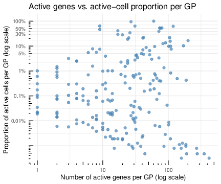

Extended Data Figure 1: Reproducibility across IGTs and batch-effect evaluation
Ziang Zhang
Last updated: 2026-07-31
Checks: 7 0
Knit directory:
immgenT-GP-analysis/analysis/
This reproducible R Markdown analysis was created with workflowr (version 1.7.2). The Checks tab describes the reproducibility checks that were applied when the results were created. The Past versions tab lists the development history.
Great! Since the R Markdown file has been committed to the Git repository, you know the exact version of the code that produced these results.
Great job! The global environment was empty. Objects defined in the global environment can affect the analysis in your R Markdown file in unknown ways. For reproduciblity it’s best to always run the code in an empty environment.
The command set.seed(1) was run prior to running the
code in the R Markdown file. Setting a seed ensures that any results
that rely on randomness, e.g. subsampling or permutations, are
reproducible.
Great job! Recording the operating system, R version, and package versions is critical for reproducibility.
Nice! There were no cached chunks for this analysis, so you can be confident that you successfully produced the results during this run.
Great job! Using relative paths to the files within your workflowr project makes it easier to run your code on other machines.
Great! You are using Git for version control. Tracking code development and connecting the code version to the results is critical for reproducibility.
The results in this page were generated with repository version 2e75e8e. See the Past versions tab to see a history of the changes made to the R Markdown and HTML files.
Note that you need to be careful to ensure that all relevant files for
the analysis have been committed to Git prior to generating the results
(you can use wflow_publish or
wflow_git_commit). workflowr only checks the R Markdown
file, but you know if there are other scripts or data files that it
depends on. Below is the status of the Git repository when the results
were generated:
Ignored files:
Ignored: .DS_Store
Ignored: .claude/
Ignored: analysis/.DS_Store
Ignored: analysis/.Rhistory
Ignored: analysis/assets/.DS_Store
Ignored: captions/
Ignored: code/.DS_Store
Ignored: code/other/topic_flashier_20250212.R
Ignored: code/other/topic_wrapper_20250215_alldata_backfit.sh
Ignored: data
Ignored: experiments/
Ignored: figures/.DS_Store
Ignored: figures/Previous/.DS_Store
Ignored: figures/Previous/bits/.DS_Store
Ignored: figures/Previous/bits/Figure 1/.DS_Store
Ignored: figures/Previous/bits/Figure 2/.DS_Store
Ignored: figures/Previous/bits/Figure 3/.DS_Store
Ignored: figures/Previous/bits/Figure 4/.DS_Store
Ignored: figures/Previous/bits/Figure 6/.DS_Store
Ignored: figures/Previous/bits/Figure 7/.DS_Store
Ignored: figures/Previous/bits/Figure S1/.DS_Store
Ignored: figures/Previous/bits/Figure S2/.DS_Store
Ignored: figures/Previous/bits/Figure S3/.DS_Store
Ignored: figures/Previous/bits/Figure S6/.DS_Store
Ignored: figures/Previous/bits/Figure S7/.DS_Store
Ignored: figures/final-selected/.DS_Store
Ignored: figures/final-selected/Figure 1/.DS_Store
Ignored: figures/final-selected/Figure 2/.DS_Store
Ignored: figures/final-selected/Figure 4/.DS_Store
Ignored: figures/final-selected/Figure S4/.DS_Store
Ignored: figures/templates_20260729/
Ignored: log/
Ignored: output/.DS_Store
Ignored: output/Figure2/
Ignored: output/Figure7b/7b_cell_metadata.csv.gz
Ignored: plan/
Ignored: tables/
Ignored: tmp/
Note that any generated files, e.g. HTML, png, CSS, etc., are not included in this status report because it is ok for generated content to have uncommitted changes.
These are the previous versions of the repository in which changes were
made to the R Markdown (analysis/FigureS1.Rmd) and HTML
(docs/FigureS1.html) files. If you’ve configured a remote
Git repository (see ?wflow_git_remote), click on the
hyperlinks in the table below to view the files as they were in that
past version.
| File | Version | Author | Date | Message |
|---|---|---|---|---|
| Rmd | 2e75e8e | Ziang Zhang | 2026-07-31 | Figure S1e: show all sixteen samples of IGT13/IGT14, not just the spleen four |
| html | cbcec52 | Ziang Zhang | 2026-07-30 | Build site: Extended Data Figure naming |
| Rmd | 66aa029 | Ziang Zhang | 2026-07-30 | Name the Extended Data figures as published on the site |
| html | ac650a0 | Ziang Zhang | 2026-07-30 | Build site: Figure S5 (ex-S6a) and Figure S6 as a-f |
| html | 253a0be | Ziang Zhang | 2026-07-30 | Build site: Figure S1 with the new S1c-S1f |
| Rmd | 8c2f7c9 | Ziang Zhang | 2026-07-30 | Figure S1: replace S1c/S1d, add S1e, old S1e becomes S1f |
| html | ae21d37 | Ziang Zhang | 2026-07-28 | Build site: republish after the reorder commits |
| html | d538aa2 | Ziang Zhang | 2026-07-28 | Build site: reordered Figures 6 / S6 / S3 and the new Figure 7b page |
| html | 029b0ae | Ziang Zhang | 2026-07-28 | Build site. |
| Rmd | 0f5b5da | Ziang Zhang | 2026-07-28 | Align all figure captions with captions_20260728_final.docx |
| html | 3fc3789 | Ziang Zhang | 2026-07-27 | Republish all 24 pages |
| html | 1390a03 | Ziang Zhang | 2026-07-27 | Republish all 24 pages |
| html | 8a62cc5 | Ziang Zhang | 2026-07-27 | Build site: S1C/S1D on the shared 18-IGT basis |
| Rmd | 39de9e0 | Ziang Zhang | 2026-07-27 | Compute S1C and S1D from one matrix over the 18 >=500-cell IGTs |
| html | 6c1a613 | Ziang Zhang | 2026-07-27 | Build site: S1D now follows S1C |
| Rmd | bf7afcf | Ziang Zhang | 2026-07-27 | Make S1D consistent with S1C, and drop the legacy pages from docs/ |
| html | adaef21 | Ziang Zhang | 2026-07-27 | Build site: panel fixes and PDF-derived assets |
| Rmd | 9e032a7 | Ziang Zhang | 2026-07-27 | Fix four panels that diverged from the published figures; make renders reproducible |
| html | 5b19858 | Ziang Zhang | 2026-07-27 | Build site. |
| Rmd | 91ee059 | Ziang Zhang | 2026-07-26 | Select each panel’s code block by name, not by line number |
| html | 91ee059 | Ziang Zhang | 2026-07-26 | Select each panel’s code block by name, not by line number |
| Rmd | c655a83 | Ziang Zhang | 2026-07-16 | Fig S1E: use empirical active-gene/cell counts (match Figure 2) |
| html | c655a83 | Ziang Zhang | 2026-07-16 | Fig S1E: use empirical active-gene/cell counts (match Figure 2) |
| Rmd | c2b3360 | Ziang Zhang | 2026-07-13 | Use log-scale axes for Fig 1E/1F and add Fig S1E gene-vs-cell sparsity scatter |
| html | c2b3360 | Ziang Zhang | 2026-07-13 | Use log-scale axes for Fig 1E/1F and add Fig S1E gene-vs-cell sparsity scatter |
| html | 92021bf | Ziang Zhang | 2026-07-02 | Build site. |
| html | 827c89b | Ziang Zhang | 2026-07-02 | Build site. |
| Rmd | 8ac7f9f | Ziang Zhang | 2026-07-02 | Add data provenance notes to each script; remove conversational |
| Rmd | f9db962 | Ziang Zhang | 2026-07-02 | Simplify layout: drop old code/script folders, rename |
| html | c6e5086 | Ziang Zhang | 2026-07-02 | Build site. |
| html | 5a79883 | Ziang Zhang | 2026-07-02 | Build site. |
| Rmd | 2b0e445 | Ziang Zhang | 2026-07-02 | Fix GitHub source links to point at the new |
| html | cf1d0ac | Ziang Zhang | 2026-07-02 | Build site. |
| Rmd | 06b2461 | Ziang Zhang | 2026-07-02 | Initial commit: immgenT-GP-analysis |
| html | 06b2461 | Ziang Zhang | 2026-07-02 | Initial commit: immgenT-GP-analysis |
All panels are produced by script/FigureS1.R.
The code below is shown for reference (not re-executed on this page);
the images are its pre-rendered output. Panels A/B reuse a cached
per-IGT cosine-similarity score matrix
(data/igt_specific_cosine_scores.csv); see
code/pipeline/05_igt_validation.R for how that matrix
itself is produced (a much heavier, cluster-scale computation).
Setup
# Figure S1. GP reproducibility across IGTs.
#
# Panels produced (see figures/Previous/bits/Figure S1/FigureS1_caption.md
# for the full caption text):
# S1A Cumulative number of GPs validated (cosine >= threshold, thresholds
# 0.2-0.8) as IGTs are added one at a time, in IGT index order.
# S1B Number of GPs validated by at least X IGTs, vs X (log-log), for the
# same thresholds.
# S1C Per-GP proportion of loading variance explained by IGT (x) vs. by
# cell type / annotation_level2 (y), one-way ANOVA eta^2, over the
# standard-spleen cells.
# S1D GP9 loading across IGTs (standard-spleen cells) -- the shape of the
# most extreme x-axis point in S1C.
# S1E GP9 loading across all sixteen individual samples inside IGT13/IGT14
# (2 runs x 2 mice x 4 tissues), showing the effect is not one aberrant
# mouse, one tissue, or an artifact of the spleen standard. This is the
# one panel here not restricted to the spleen standards.
# S1F Scatter of the NUMBER of active genes (x) vs. proportion of active
# cells (y) per GP, using the same hard-threshold definitions as Figure 2
# (|normalized score| > 0.25 for genes; normalized loading > 0.1 for
# cells), over non-thymocyte cells -- not the EBMF sparsity prior. One
# dot per GP.
#
# S1C-S1E replaced, on 2026-07-30, the previous S1C (mean vs. variance of
# per-IGT mean loading) and S1D (heatmap of the ten highest-variance GPs),
# both of which were computed on the 18 IGTs with >= 500 standard-spleen
# cells. The old panels quantified between-IGT spread on an unnormalized
# scale, which cannot be compared against any other grouping: the
# variance of per-group mean loadings is dominated by the GP's own
# loading scale, so an IGT axis and a cell-type axis come out nearly
# identical (Spearman 0.93) whatever the underlying structure. Dividing
# by the total variance (eta^2) removes that and makes the two
# directly comparable, which is what S1C now shows. The old S1E keeps
# its content and becomes S1F.
#
# Source: S1A/S1B ported from Figure_Saturation.R; S1C-S1E written for this
# figure (the retired S1C/S1D came from Figure_batch.R panels a/b).
#
# S1A/S1B reuse the per-IGT cosine-matching score matrix
# (data/igt_specific_cosine_scores.csv) rather than recomputing it here --
# recomputing requires Hungarian-matching each of the ~80 per-IGT
# refactorizations in data/igt_specific/*.qs against the full model, which is
# the job of code/pipeline/05_igt_validation.R (run once upstream).
#
# Required inputs (data/) -- see code/README.md's "Data provenance" table
# for the full picture:
# igt_specific_cosine_scores.csv [code/pipeline/05_igt_validation.R]
# L_pm_filtered.rds [code/pipeline/01b_filter_cells.R]
# igt1_96_..._ADTonly.Rds [primary input Seurat object]
library(dplyr)
library(tidyr)
library(ggplot2)Panels A and B both use the cached per-IGT cosine score matrix:
data_path <- "data/"
figure_path <- "figures/final-selected/Figure S1/"
gp_label <- function(x) sub("^K(\\d+)$", "GP\\1", x)
# ============================================================
# S1A/S1B: load the cached per-IGT cosine score matrix
# (GPs x IGTs; produced by code/pipeline/05_igt_validation.R)
# ============================================================
score_mat <- as.matrix(read.csv(paste0(data_path, "igt_specific_cosine_scores.csv"), row.names = 1, check.names = FALSE))(A) Cumulative GPs validated as IGTs are added
# ============================================================
# S1A: cumulative number of GPs validated as IGTs are added, in IGT-index order
# ============================================================
igt_idx <- as.integer(gsub("^IGT", "", colnames(score_mat)))
o <- order(igt_idx)
score_mat_ord <- score_mat[, o, drop = FALSE]
cum_validated_counts <- function(score_mat_ord, threshold) {
validated <- score_mat_ord >= threshold
ever_validated <- t(apply(validated, 1, cummax)) # 200 x nIGT logical
colSums(ever_validated)
}
plot_df_a <- lapply(thresholds, function(t) {
y <- cum_validated_counts(score_mat_ord, t)
data.frame(n_IGTs_included = seq_along(y), validated_GPs = y, threshold = factor(t))
}) %>% bind_rows()
p_S1A <- ggplot(plot_df_a, aes(x = n_IGTs_included, y = validated_GPs, color = threshold)) +
geom_line(linewidth = 1) +
geom_point(size = 1) +
labs(x = "Number of IGTs included (in IGT index order)", y = "Number of validated GPs (cumulative union)", color = "Threshold") +
theme_minimal() +
scale_color_brewer(palette = "Set1") +
scale_x_continuous(breaks = seq(0, ncol(score_mat_ord), by = 5)) +
scale_y_continuous(breaks = seq(0, max(plot_df_a$validated_GPs), by = 20))
ggsave(paste0(figure_path, "S1A.pdf"), plot = p_S1A, width = 6, height = 4)
Extended Data Fig. 1A. Cumulative number of GPs, out of the 200 identified in the full immgenT solution, reproduced in at least one dataset (IGT). For each dataset an EBMF factorization was computed and its factors were matched to the 200 immgenT GPs by Hungarian assignment using the cosine similarity of gene-score vectors (restricted to shared genes, with columns scaled); a GP was considered reproduced in a dataset when this cosine similarity exceeded the threshold indicated for each curve. Adding IGTs one at a time in index order, the curves show the cumulative count for cosine-similarity thresholds of 0.2-0.8.
(B) GPs validated by at least X IGTs
# ============================================================
# S1B: number of GPs validated by at least X IGTs, vs X (log-log)
# ============================================================
thresholds <- seq(0.2, 0.8, by = 0.1)
X_grid <- 1:50
plot_df_b <- tidyr::crossing(threshold = thresholds, X = X_grid) %>%
mutate(n_GP = purrr::map2_int(threshold, X, \(t, x) {
rowSums(score_mat >= t, na.rm = TRUE) |> (\(v) sum(v >= x))()
}))
p_S1B <- ggplot(plot_df_b, aes(x = X, y = n_GP, group = factor(threshold))) +
geom_line() +
geom_point(size = 1) +
scale_y_log10() +
scale_x_log10() +
labs(x = "X (validated by at least X IGTs)", y = "Number of GPs", color = "Threshold") +
aes(color = factor(threshold)) +
theme_minimal() +
scale_color_brewer(palette = "Set1")
ggsave(paste0(figure_path, "S1B.pdf"), plot = p_S1B, width = 6, height = 4)
Extended Data Fig. 1B. Distribution of GP reproducibility across datasets. Using the same per-IGT cosine matching, the curves show the number of GPs reproduced in at least that many datasets, for cosine-similarity thresholds ranging from 0.2 to 0.8 (both axes log-scaled).
(C) Variance explained by dataset vs. by cell type
# ============================================================
# Load data for S1C/S1D/S1E
# ============================================================
L_pm_filtered <- readRDS(paste0(data_path, "L_pm_filtered.rds"))
seurat_meta <- readRDS(paste0(data_path, "igt1_96_withtotalvi20260206_clean_ADTonly.Rds"))@meta.data
seurat_meta_filtered <- seurat_meta[rownames(L_pm_filtered), ]
seurat_meta_filtered_spleen <- seurat_meta_filtered %>% filter(spleen_standard == TRUE)
# All three panels use the same cell set: every standard-spleen cell, with no
# per-group size filter. S1C needs all of them because the two groupings it
# compares have different numbers of groups and dropping small ones would drop
# them asymmetrically; S1D/S1E then show one GP over that same population.
spleen_cells <- intersect(rownames(L_pm_filtered), rownames(seurat_meta_filtered_spleen))
L_spleen <- L_pm_filtered[spleen_cells, , drop = FALSE]
igt_vec <- as.character(seurat_meta_filtered_spleen[spleen_cells, "IGT"])
lv2_vec <- as.character(seurat_meta_filtered_spleen[spleen_cells, "annotation_level2"])
n_spleen <- length(spleen_cells)# ============================================================
# S1C: proportion of loading variance explained by IGT vs. by cell type
# ============================================================
# One-way ANOVA eta^2 per GP for each grouping, on the same cells:
# eta^2 = SS_between / SS_total, SS_between = sum_g n_g (mean_g - mean)^2
# Note this is NOT var(group means) / var(loading): SS_between weights each
# group by its cell count and uses the cell-level grand mean, whereas the
# unweighted variance of group means carries a G/(G-1) inflation and ignores
# the 1-to-9320 spread in group sizes. On this data the unweighted ratio runs
# 0.44x-4.06x the true eta^2 (median 1.40x).
grand_mean <- colMeans(L_spleen)
ss_total <- apply(L_spleen, 2, var) * (n_spleen - 1)
eta2_by <- function(group) {
n_g <- as.numeric(table(group))
group_means <- rowsum(L_spleen, group) / n_g
colSums(n_g * sweep(group_means, 2, grand_mean)^2) / ss_total
}
eta2_igt <- eta2_by(igt_vec)
eta2_lv2 <- eta2_by(lv2_vec)
# eta^2 grows with the number of groups even with no signal: its null
# expectation is (G-1)/(N-1). The two dotted guides mark 5x that floor, which
# differs between the axes because level2 has ~3x as many groups as IGT.
floor_igt <- (length(unique(igt_vec)) - 1) / (n_spleen - 1)
floor_lv2 <- (length(unique(lv2_vec)) - 1) / (n_spleen - 1)
pve_df <- data.frame(GP = colnames(L_spleen), x = eta2_igt, y = eta2_lv2)
top_n <- 12 # label the strongest GPs on each axis
pve_df$label <- ifelse(
seq_len(nrow(pve_df)) %in% union(order(-pve_df$x)[1:top_n], order(-pve_df$y)[1:top_n]),
gp_label(as.character(pve_df$GP)), ""
)
p_S1C <- ggplot(pve_df, aes(x = x, y = y, label = label)) +
geom_abline(slope = 1, intercept = 0, linetype = 2, colour = "grey50") +
geom_vline(xintercept = 5 * floor_igt, linetype = 3, colour = "grey55") +
geom_hline(yintercept = 5 * floor_lv2, linetype = 3, colour = "grey55") +
geom_point(size = 1.6, alpha = 0.75, colour = "steelblue") +
ggrepel::geom_text_repel(seed = 42, size = 2.8, max.overlaps = Inf, segment.color = "grey60") +
cowplot::theme_cowplot(font_size = 11) +
labs(
title = "PVE per GP: IGT vs level2 (control spleen, all cells)",
subtitle = sprintf("all %s cells, %d IGTs, %d level2 types; linear axes; dashed = y=x",
format(n_spleen, big.mark = ","),
length(unique(igt_vec)), length(unique(lv2_vec))),
x = expression("PVE by IGT (" * eta^2 * ")"),
y = expression("PVE by level2 (" * eta^2 * ")")
)
ggsave(paste0(figure_path, "S1C.pdf"), plot = p_S1C, width = 6.5, height = 5.5, dpi = 300)
Extended Data Fig. 1C. Batch-effect evaluation using
the spleen standards spiked into each dataset (IGT). For each GP, the
proportion of loading variance explained by dataset (x-axis) is plotted
against the proportion explained by cell type
(annotation_level2, y-axis), both computed over the same
47,253 spleen-standard cells (35 datasets, 102 cell types) as the
one-way ANOVA \(\eta^2 =
\mathrm{SS_{between}}/\mathrm{SS_{total}}\), where each group’s
contribution is weighted by its cell count. Each point is one of the 200
GPs; the twelve highest on each axis are labeled. The dashed line is
\(y = x\); the two dotted guides mark
five times the null expectation \((G-1)/(N-1)\) of \(\eta^2\) under no group effect, which
differs between axes because the two groupings have different numbers of
groups. Most GPs sit near the origin, i.e. are explained by neither; the
GPs that separate do so along one axis or the other, with only GP32
close to \(y = x\).
(D) GP9 loading across datasets
# ============================================================
# S1D: GP9 loading across IGTs (standard spleen)
# ============================================================
# GP9 is the extreme point on S1C's x-axis (eta^2 = 0.91 by IGT vs 0.08 by
# level2). Drawn over the IGTs with >= 100 standard-spleen cells, so that no box
# summarises a handful of cells; ordered by median loading, which puts the two
# IGTs carrying the effect at the top rather than assuming where they land.
gp_focus <- "K9"
igt_keep <- names(table(igt_vec))[table(igt_vec) >= 100]
box_igt <- data.frame(igt = igt_vec, loading = L_spleen[, gp_focus]) %>%
filter(igt %in% igt_keep)
igt_order <- names(sort(tapply(box_igt$loading, box_igt$igt, median)))
box_igt$igt <- factor(box_igt$igt, levels = igt_order)
p_S1D <- ggplot(box_igt, aes(x = loading, y = igt)) +
geom_boxplot(outlier.size = 0.3, outlier.alpha = 0.25, fill = "grey92", linewidth = 0.35) +
cowplot::theme_cowplot(font_size = 11) +
labs(
title = paste0(gp_label(gp_focus), " loading across IGTs (control spleen)"),
subtitle = sprintf("%d IGTs with >= 100 standard-spleen cells, ordered by median loading",
length(igt_keep)),
x = paste0(gp_label(gp_focus), " loading"), y = NULL
)
ggsave(paste0(figure_path, "S1D.pdf"), plot = p_S1D, width = 5.5, height = 6, dpi = 300)
Extended Data Fig. 1D. The extreme point on (C)’s x-axis, shown directly: the distribution of GP9 loading in spleen-standard cells of each dataset, for the 31 datasets contributing at least 100 such cells, ordered by median loading. GP9 is elevated in IGT13 and IGT14 (medians 0.60 and 0.56) and uniformly low in every other dataset (medians 0.02-0.12), which is what a dataset-specific – rather than cell-type-specific – program looks like.
(E) GP9 loading in every sample of IGT13 and IGT14
# ============================================================
# S1E: GP9 loading across every individual sample inside IGT13/IGT14
# ============================================================
# Unlike S1C/S1D this panel is NOT restricted to the spleen standards: IGT13 and
# IGT14 each pool eight hashed samples, two mice (mouse0021 male, mouse0022
# female) x four tissues (spleen plus inguinal / axillary / mesenteric LN), so
# `spleen_standard` would show only 4 of the 16. Drawing all 16 is what makes the
# point: GP9 is elevated in every sample of both runs and in every tissue, so the
# effect belongs to the run and not to one aberrant mouse, one tissue, or the
# spiked-in spleen standard. The reference line is GP9's mean over all cells
# outside these two IGTs.
igt_focus <- c("IGT13", "IGT14")
in_focus <- seurat_meta_filtered$IGT %in% igt_focus
focus_cells <- rownames(seurat_meta_filtered)[in_focus]
tissue_levels <- c("spleen", "LNinguinal", "LNaxillary", "LNmesenteric")
box_sample <- data.frame(
igt = as.character(seurat_meta_filtered[focus_cells, "IGT"]),
sample_code = as.character(seurat_meta_filtered[focus_cells, "sample_code"]),
ht = as.character(seurat_meta_filtered[focus_cells, "HT"]),
sex = as.character(seurat_meta_filtered[focus_cells, "sex"]),
loading = L_pm_filtered[focus_cells, gp_focus]
) %>%
mutate(
# I13H1_spleen_allT_mouse0021 -> tissue "spleen", mouse "mouse0021"
tissue = factor(sub("^I\\d+H\\d+_([^_]+)_.*$", "\\1", sample_code), levels = tissue_levels),
mouse = sub("^.*_(mouse\\d+)$", "\\1", sample_code),
lab = paste0(tissue, " ", mouse, " (", substr(sex, 1, 1), ", ", ht, ")")
)
# rows: tissue in anatomical order, and within a tissue the male mouse first
lab_order <- box_sample %>%
distinct(lab, tissue, mouse) %>%
arrange(desc(as.integer(tissue)), desc(mouse)) %>%
pull(lab)
box_sample$lab <- factor(box_sample$lab, levels = lab_order)
elsewhere_mean <- mean(L_pm_filtered[!in_focus, gp_focus])
p_S1E <- ggplot(box_sample, aes(x = loading, y = lab, fill = tissue)) +
geom_vline(xintercept = elsewhere_mean, linetype = 2, colour = "firebrick") +
geom_boxplot(outlier.size = 0.3, outlier.alpha = 0.25, linewidth = 0.35) +
facet_wrap(~ igt) +
scale_fill_manual(values = c(spleen = "#cfe0ee", LNinguinal = "#e8e8d8",
LNaxillary = "#ded8e8", LNmesenteric = "#eee2cf")) +
cowplot::theme_cowplot(font_size = 11) +
labs(
title = paste0(gp_label(gp_focus), " loading in every sample of IGT13 and IGT14"),
subtitle = sprintf("8 hashed samples per run = 2 mice x 4 tissues; dashed = mean over all cells outside these two IGTs (%.3f)",
elsewhere_mean),
x = paste0(gp_label(gp_focus), " loading"), y = NULL
) +
theme(legend.position = "none", strip.background = element_rect(fill = "grey92"))
ggsave(paste0(figure_path, "S1E.pdf"), plot = p_S1E, width = 9, height = 4, dpi = 300)
Extended Data Fig. 1E. The same GP9 loading, split into the individual hashed samples that make up the two datasets from (D). Unlike the other panels of this figure, this one is not restricted to the spleen standards: IGT13 and IGT14 each pool eight samples – the same two mice (mouse0021, male; mouse0022, female) across four tissues (spleen and inguinal, axillary and mesenteric lymph node) – of which the spleen standard is only one per mouse. GP9 is elevated in all sixteen samples (sample means 0.544-0.619), so the effect belongs to the run rather than to one aberrant mouse, one tissue, or the spiked-in spleen standard itself. The dashed line marks GP9’s mean over all cells outside these two datasets (0.061).
(F) Active-gene vs. active-cell proportion per GP
# ============================================================
# S1F: active-gene vs active-cell scatter per GP, using the SAME hard-threshold
# definitions as Figure 2 (per-GP-normalized): number of active genes = count of
# genes with |score| > 0.25 of the GP's max; proportion of active cells = fraction
# of cells with loading > 0.1 of the GP's max. Non-thymocyte cells, matching
# Figure 2. (Replaces the earlier EBMF-sparsity-prior version. Was S1E until
# 2026-07-30, when the new S1C-S1E pushed it back one letter; content unchanged.)
# ============================================================
non_thymo_s1f <- seurat_meta_filtered$cellID[seurat_meta_filtered$annotation_level1 != "thymocyte"]
L_s1f <- L_pm_filtered[non_thymo_s1f, ]
L_norm_s1f <- L_s1f / matrix(apply(L_s1f, 2, max), nrow = nrow(L_s1f), ncol = ncol(L_s1f), byrow = TRUE)
prop_cells <- colSums(L_norm_s1f > 0.1) / nrow(L_norm_s1f) # proportion of active cells per GP
F_s1f <- readRDS(paste0(data_path, "F_pm_filtered.rds"))
F_norm_s1f <- F_s1f / matrix(apply(F_s1f, 2, function(x) max(abs(x))), nrow = nrow(F_s1f), ncol = ncol(F_s1f), byrow = TRUE)
n_genes_act <- colSums(abs(F_norm_s1f) > 0.25) # number of active genes per GP
scatter_df_s1f <- data.frame(n_genes = n_genes_act, prop_cells = prop_cells)
pct_breaks <- c(0.0001, 0.001, 0.01, 0.05, 0.1, 0.3, 0.5, 1)
p_S1F <- ggplot(scatter_df_s1f, aes(x = n_genes, y = prop_cells)) +
geom_point(size = 2, alpha = 0.7, color = "steelblue") +
scale_x_log10(labels = scales::label_comma()) +
scale_y_log10(breaks = pct_breaks, labels = function(x) paste0(x * 100, "%")) +
annotation_logticks(sides = "bl") +
labs(
x = "Number of active genes per GP (log scale)",
y = "Proportion of active cells per GP (log scale)",
title = "Active genes vs. active-cell proportion per GP"
) +
theme_minimal(base_size = 13)
ggsave(paste0(figure_path, "S1F.pdf"), plot = p_S1F, width = 6, height = 5, dpi = 300)
| Version | Author | Date |
|---|---|---|
| 8c2f7c9 | Ziang Zhang | 2026-07-30 |
Extended Data Fig. 1F. For each GP, the number of active genes (x-axis) versus the fraction of active cells (y-axis), using the same thresholds as Figure 2: a gene is active in a GP if its per-GP-normalized score exceeds 0.25 in absolute value, and a cell is active if its per-GP-normalized loading exceeds 0.1; computed over non-thymocyte cells. Both axes on log scale; each dot is one of the 200 GPs. (Was panel E before 2026-07-30; content unchanged.)
sessionInfo()R version 4.5.1 (2025-06-13)
Platform: aarch64-apple-darwin20
Running under: macOS Sequoia 15.6.1
Matrix products: default
BLAS: /System/Library/Frameworks/Accelerate.framework/Versions/A/Frameworks/vecLib.framework/Versions/A/libBLAS.dylib
LAPACK: /Library/Frameworks/R.framework/Versions/4.5-arm64/Resources/lib/libRlapack.dylib; LAPACK version 3.12.1
locale:
[1] en_CA/en_CA/en_CA/C/en_CA/en_CA
time zone: America/Chicago
tzcode source: internal
attached base packages:
[1] stats graphics grDevices utils datasets methods base
loaded via a namespace (and not attached):
[1] vctrs_0.7.3 cli_3.6.6 knitr_1.50 rlang_1.2.0
[5] xfun_0.55 stringi_1.8.7 otel_0.2.0 promises_1.5.0
[9] jsonlite_2.0.0 workflowr_1.7.2 glue_1.8.1 rprojroot_2.1.1
[13] git2r_0.36.2 htmltools_0.5.9 httpuv_1.6.16 sass_0.4.10
[17] rmarkdown_2.30 evaluate_1.0.5 jquerylib_0.1.4 tibble_3.3.0
[21] fastmap_1.2.0 yaml_2.3.12 lifecycle_1.0.5 whisker_0.4.1
[25] stringr_1.6.0 compiler_4.5.1 fs_1.6.6 Rcpp_1.1.1-1.1
[29] pkgconfig_2.0.3 later_1.4.4 digest_0.6.39 R6_2.6.1
[33] pillar_1.11.1 magrittr_2.0.5 bslib_0.9.0 tools_4.5.1
[37] cachem_1.1.0